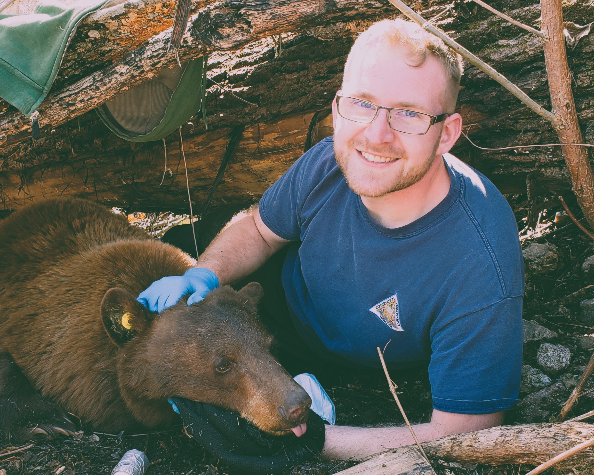

About Me
Learn about my career path and professional interests.
Welcome to the portfolio of Benjamin Tjepkes, an experienced wildlife ecologist and graduate student studying geospatial data science.

My work focuses on using a variety of data science and geospatial technologies to research the natural world, often aimed at wildlife conservation. I am currently a graduate student at the University of Missouri studying geographic information systems in the Department of Geography. I have over seven years of continuous professional development with governmental, private, and academic entities in the environmental sector. Explore this site for more info!